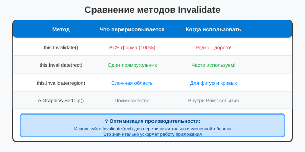

Урок 3.2: Оптимизация перерисовки
📌 Ключевые моменты этого урока:
- Частичная перерисовка экономит ресурсы (редкое полное обновление)
- Invalidate(region) обновляет только нужную область вместо всей формы
- SetClip ограничивает область рисования для дополнительной оптимизации
- ClipRectangle показывает где именно нужна перерисовка (важно для профилирования)
- FPS счётчик помогает оценить реальное улучшение производительности
Полный и частичный Invalidate
ПОЧЕМУ это важно: У каждого PixelFormat полный Invalidate перерисовывает ВСЮ форму - это дорого! Частичный Invalidate перерисовывает ТОЛЬКО изменённую область.
Сравнение методов:

Сравнение методов Invalidate для оптимизации перерисовки
Частичная перерисовка
Вместо перерисовки всей формы, можно перерисовывать только измененную область:
// Перерисовка только определенной области
Rectangle updateRect = new Rectangle(50, 50, 100, 100);
this.Invalidate(updateRect);
this.Update(); // Немедленная перерисовка
// Для сложных форм используйте Region
Region updateRegion = new Region();
updateRegion.Union(new Rectangle(10, 10, 50, 50));
updateRegion.Union(new Rectangle(100, 100, 50, 50));
this.Invalidate(updateRegion);ClipRectangle: область, требующая перерисовки
e.ClipRectangle внутри Paint события показывает область, которую операционная система решила перерисовать. Используйте это для оптимизации:
private void Form1_Paint(object sender, PaintEventArgs e)
{
// e.ClipRectangle - это область, которая требует обновления
// Рисуйте ВСЁ, но оптимизируйте для этой области
Graphics g = e.Graphics;
Rectangle clipArea = e.ClipRectangle;
// Пример: если у нас 1000 фигур, рисуем только те, что в clipArea
for (int i = 0; i < allShapes.Count; i++)
{
if (clipArea.IntersectsWith(allShapes[i].Bounds))
{
// Рисуем только фигуры, которые пересекаются с областью обновления
g.DrawRectangle(Pens.Black, allShapes[i].Bounds);
}
}
}SetClip: дополнительное ограничение рисования
// Ограничение области рисования
Graphics g = e.Graphics;
Rectangle clipRect = new Rectangle(10, 10, 200, 200);
g.SetClip(clipRect);
// Теперь рисование происходит только в этой области
g.DrawEllipse(Pens.Black, 0, 0, 500, 500); // Нарисуется только часть
g.ResetClip(); // Сброс ограниченияИзбегание лишних вызовов Invalidate
Не вызывайте Invalidate слишком часто. Группируйте изменения:
// Плохо: много вызовов
x += 1; this.Invalidate();
y += 1; this.Invalidate();
angle += 1; this.Invalidate();
// Хорошо: один вызов
x += 1;
y += 1;
angle += 1;
this.Invalidate();Профилирование производительности
// Измерение времени выполнения
System.Diagnostics.Stopwatch sw = new System.Diagnostics.Stopwatch();
sw.Start();
// Ваш код рисования
for (int i = 0; i < 1000; i++)
{
g.DrawEllipse(Pens.Black, i, i, 50, 50);
}
sw.Stop();
Console.WriteLine($"Время выполнения: {sw.ElapsedMilliseconds} мс");Практическое задание
Задание 1: Частичная перерисовка
- Создайте приложение с кнопкой
- Добавьте поле для позиции прямоугольника:
private int rectX = 10; private int rectY = 10; - В обработчике Click кнопки:
private void button1_Click(object sender, EventArgs e) { // Инвалидируем только область, где был прямоугольник Rectangle oldRect = new Rectangle(rectX, rectY, 100, 50); this.Invalidate(oldRect); // Перемещаем прямоугольник rectX += 20; rectY += 20; // Инвалидируем новую область Rectangle newRect = new Rectangle(rectX, rectY, 100, 50); this.Invalidate(newRect); } - В обработчике Paint нарисуйте прямоугольник
- Запустите приложение и нажмите кнопку несколько раз
Задание 2: Использование ClipRectangle
- Создайте приложение с множеством прямоугольников:
private Listrectangles = new List (); private Random random = new Random(); public Form1() { InitializeComponent(); // Создаем 1000 случайных прямоугольников for (int i = 0; i < 1000; i++) { rectangles.Add(new Rectangle( random.Next(0, 500), random.Next(0, 500), random.Next(20, 50), random.Next(20, 50) )); } } private void Form1_Paint(object sender, PaintEventArgs e) { Graphics g = e.Graphics; Rectangle clipArea = e.ClipRectangle; // Рисуем только прямоугольники, пересекающиеся с областью обновления foreach (Rectangle rect in rectangles) { if (clipArea.IntersectsWith(rect)) { g.DrawRectangle(Pens.Blue, rect); } } } - Запустите приложение
Задание 3: SetClip
- Попробуйте ограничить область рисования:
private void Form1_Paint(object sender, PaintEventArgs e) { Graphics g = e.Graphics; // Ограничиваем область рисования Rectangle clipRect = new Rectangle(100, 100, 200, 200); g.SetClip(clipRect); // Рисуем большой круг — будет видна только часть g.DrawEllipse(Pens.Red, 0, 0, 500, 500); // Рисуем границу области для наглядности g.ResetClip(); g.DrawRectangle(Pens.Black, clipRect); } - Запустите приложение
Задание 4: Профилирование
- Измерьте время рисования:
using System.Diagnostics; private void Form1_Paint(object sender, PaintEventArgs e) { Graphics g = e.Graphics; Stopwatch sw = new Stopwatch(); sw.Start(); // Рисуем 1000 фигур for (int i = 0; i < 1000; i++) { g.DrawRectangle(Pens.Blue, i, i % 300, 20, 20); } sw.Stop(); Console.WriteLine($"Время выполнения: {sw.ElapsedMilliseconds} мс"); } - Запустите приложение и посмотрите в Output
💡 Совет: Используйте Invalidate(region) для оптимизации, если вы знаете, какая область изменилась. Это значительно ускоряет перерисовку.
Проверка знаний
Ответьте на вопросы, чтобы проверить, насколько хорошо вы усвоили материал:
1. Как перерисовать только определенную область формы?
2. Что делает метод SetClip?
3. Что такое ClipRectangle?
4. Какой метод сбрасывает ограничение области рисования?
5. В каком пространстве имен находится Stopwatch?
6. Какой метод Rectangle проверяет пересечение с другим прямоугольником?
7. Что делает метод Invalidate() без параметров?
8. Какой класс используется для измерения времени выполнения?